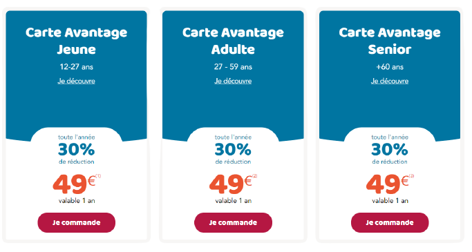
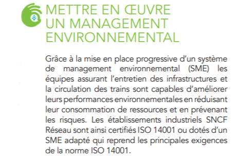

Actions concrètes
Dans cette partie, nous répondrons à la question :
Quelles actions concrètes la SNCF a-t-elle menée par le passé et quelles sont les projets à venir ?
Cette partie reviendra sur les questions 1, 2, 3, 4, 8.
-
Tout d'abord, il faut savoir les objectifs de la SNCF en matière de developpement durable.
L'entreprise mène de nombreux projets en faveur de l'écologie aussi bien sur leurs trains que sur ses locaux d'entreprise
- Pour la partie "Mobilité", la SNCF souhaite rénover les petites et moyennes gares de France afin d'améliorer la qualité des services proposés et l'intermodalité de ses gares (Pour rappel, l'intermodalité désigne l'utilisation de plusieurs moyens de transports différents au cours d'un même trajet).
- Pour la partie "Écologie et social", c'est avec sa filiale SNCF Immobilier que cela se passe. La SNCF souhaite réhabiliter ses sites ferroviaires désaffectés pour y construire des éco-quartiers.
- Du coté des filiales, elle souhaite développer davantage sa filiale Kéolis (Transports en commun) pour diversifier les moyens de transports proposés (Bus et tramways).
- De plus, la SNCF souhaite fluidifier et optimiser la logistique et réduire l'empreinte écologique de ses transports de marchandises.
- Et enfin, pour l'utilisation des énergies, elle va développer l'utilisation d'agrocarburants et de trains à hydrogène (TGV M) beaucoup moins polluants, afin de se détacher du diesel d'ici 2025.
=-=-=-=-=-=-=-=-=-=-=-=-=-=-=-=-=-=-=-=-=-=-=-=-=-=-=-=-=-=-=-=-=-=-=-=-=-=-=-=-=-=-=-=-=-=-=-=-=-=-=-=-=-=-=-=-=-=-=-=-=-=-=-=-=-=-=-=-=-=-=-=-=-=-=-=-=-=-=-=-=-=-=-=-=-=-=-=-=-=-=-=
La mise en place de ces projets demande des moyens qu'elle a réussi à mettre en oeuvre :
- Pour la rénovation des gares, la SNCF a investi plus de 700 millions d'€
- Pour le développement du TGV M (Train à hydrogène), la société a versé 3 milliards d'€ pour l'achat d'un centaine de rames de TGV M.
Par ailleurs, prévoit de commencer le déploiement de ce train sur 10 ans à compter de 20241).

- Dorénavant, certains TER fonctionnent à l'huile de colza pour éviter l'utilisation de diesel.
- Les éco-quartiers sont financés à hauteur de 4.5 milliards d'€ par SNCF Immobilier
- Et ses locaux sont plus respecteux de l'environnement grâce des panneaux solaires sur les toits ou aux récupérateurs d'eau de pluie.(Technicentre de Romilly sur Seine2)
=-=-=-=-=-=-=-=-=-=-=-=-=-=-=-=-=-=-=-=-=-=-=-=-=-=-=-=-=-=-=-=-=-=-=-=-=-=-=-=-=-=-=-=-=-=-=-=-=-=-=-=-=-=-=-=-=-=-=-=-=-=-=-=-=-=-=-=-=-=-=-=-=-=-=-=-=-=-=-=-=-=-=-=-=-=-=-=-=-=-=-=
Pour faire connaître ses avancées, la SNCF mise beaucoup sur la communication avec les usagers via la majorité des canaux de communication modernes
La SNCF possède un site internet qui recense la grande partie des informations exploitées pour rédiger ce rapport.3
Le groupe SNCF est ses filiales sont particulièrement actifs sur les réseaux sociaux (notamment Twitter, cf le fil d'actualité Twitter de la SNCF)
Tweets by SNCF
Autrefois, la SNCF possèdait une radio qui n'existe désormais4 La société n'hesite pas à envoyer des emails et des SMS aux usagers pour les avertir de promotion, et de bons polluants
De plus, elle propose des cartes de réduction variées pour alléger les dépenses des consommateurs

cela est étonnant mais la SNCF sponsorise des compétitions sportives comme la Coupe du Monde de Rugby de 2023, les JO de Paris 2024 entre autres.5,6
=-=-=-=-=-=-=-=-=-=-=-=-=-=-=-=-=-=-=-=-=-=-=-=-=-=-=-=-=-=-=-=-=-=-=-=-=-=-=-=-=-=-=-=-=-=-=-=-=-=-=-=-=-=-=-=-=-=-=-=-=-=-=-=-=-=-=-=-=-=-=-=-=-=-=-=-=-=-=-=-=-=-=-=-=-=-=-=-=-=-=-=
Parmi tout ces projets en cours et futurs, la SNCF se prévaut de projets qu'elle à déjà réalisé par le passé :
Tout d'abord, elle privilégie l'usage de e-billets vendus sur son application mobile au détriment des billets papiers, encore disponible mais de moins en moins utilisés.
La SNCF est certifiée ISO 14001 qui est une certification attestant que les objectifs écologiques d'une entreprise sont tenables.

=-=-=-=-=-=-=-=-=-=-=-=-=-=-=-=-=-=-=-=-=-=-=-=-=-=-=-=-=-=-=-=-=-=-=-=-=-=-=-=-=-=-=-=-=-=-=-=-=-=-=-=-=-=-=-=-=-=-=-=-=-=-=-=-=-=-=-=-=-=-=-=-=-=-=-=-=-=-=-=-=-=-=-=-=-=-=-=-=-=-=-=
L'entreprise souhaite diminuer tant que possible son empreinte numérique sur Internet.
Pour commencer, la majorité des infrastructures informatiques de la SNCF sont des serveurs physiques, à terme, la société souhaite passer toutes ces infrastructures en 100% Cloud.7
De plus, la SNCF a participé à une étude de la WWF nommée GreenIt qui a analysé l'empreinte numérique de plusieurs grandes entreprises dont la SNCF8